Journal Week 25
Table of Contents
Referencias
2026-06-16
[08:47]
Sigo con la solución numérica de la Ecuación de Burgers 1D con un forzado espaciotemporal.
[08:55]
Que primero avence por delante el salto o la cola de la onda de choque depende del valor de medio de \(u\). Si es negativo se mueve hacia a la izquierda en cualquier caso y si es positivo hacia la derecha, ya que la velocidad a la que se propaga la onda de choque es proporcional a \(u\).
[09:20]
Siento que lo que mejor funciona para evitar que explote la energía pero poder tener muchas ondas de choque, es empezar con un \(E_i > 0\) y un forzado muy pequeño.

[09:35]
Paraa una señal más larga funciona bastante mejor el tema de la media móvil.

[09:55]
Y finalmente aquí están las PDFs de los incrementos:

Lo que parece estar pasando es que hacen falta tiempos $τ$s muchos más largos para que se vuelvan Gaussianas.
[10:07]
Seguramente esto tenga que ver con el tiempo de correlación del forzado de Ornstein-Uhlenbeck. En este caso elegí $τ=$2.5, lo cual es coherente con que tome un delay de ese orden para que las PDFs se vuelvan gaussianas.
[10:15]
Efectivamente, para el forzado tan lento del experimento el tiempo de correlación es bastante más grande. Corrigiendo eso:

Eso para una ventana de 5 s de la serie temporal.
[10:21]
Y esto para una ventana de 15 s, ya a partir de 10 s empiezan a dar más raras, lo que supongo será por el forzado de 15 s.

[10:38]
Ideas:
- Para estudiar cómo se va deformando la onda a medida que avanza por la surf zone, se pueden usar wavelets con onda triangular, o separar por ondas individuales como en (Power et al. 2015).
- Para medir la relación de dispersión:
- Usar unos 5 sensores por tramos del canal.
- Usar un láser verde que ilumine agua teñida con rodamina para que emita en el rojo y utilizar la cámara para medir la superficie libre con un filtro.
- FTP por tramos.
- Para agregar aleatoriedad al forzado meter ruido en la señal del motor. Y variar levemente el tiempo de subida del flanco delantero.
- Evaluar qué pasa después del csch² numéricamente al cambiar el esquema de integración temporal.
[14:26]
Este es el diagrama espaciotemporal de la última simulación:

2026-06-17
[09:47]
TekVisa hace cosas con los drivers del puerto com en la Compu de la sala y después LinMot Talk no lo encuentra. Desde Cmd R en msconfig destildamos en ejecución al inicio los servicios de TekVisa. Hay que correr manualmente Tektronix VISA Resource Manager cuando se quiera utilizar.
[10:33]
Logré configurar el Command Table para alternar entre 2 curvas. Para poder hacer esto:
- Cargar las curvas deseadas en la memoria del drive del motor. Para esto hay que subirlas a LinMot Talk en la sección de
Curvesde la izquierda como se hace usualmente, con el cuidado de ir cambiando elCurve IDenCurve Properties. - En
Run Mode Selectionque se encuentra en el árbol de la izquierda hay que seleccionarCommand Table Mode, por defecto está puesto enContinuous Curve.

- Hay que cargar en la sección de
Command Tablede la izquierda los comandos para seleccionar las curvas:

Por ejemplo para alternar entre la curva con ID=1 y la curva con ID=2 e ir ciclando entre ellas se puede utilizar:
| Entry ID | Entry Name | Motion Command Category | Motion Command Type | Curve ID | Auto Execute new command on next cycle | ID of Sequenced Entry |
|---|---|---|---|---|---|---|
| 1 | Curve1 | Time Curve | Time Curve With Default Parameters From Act Pos | 1 | True | 2 |
| 2 | wait | Conditions | Wait until Motion Finished | - | True | 3 |
| 3 | Curve2 | Time Curve | Time Curve With Default Parameters From Act Pos | 2 | True | 4 |
| 4 | wait | Conditions | Wait until Motion Finished | - | True | 1 |
Esto elige la curva, la ejecuta, espera que termine la ejecución y pasa a correr la siguiente. El auto execute funciona un poco al estilo de las animaciones de PowerPoint, donde se configura para que la siguiente se corra al finalizar la anterior, y se dirige la última a la primera para que sea periódico.
- En
Control Panelcomo se hace usualmente se prende el firmware del motor:- Se usa
Switch On(la primera casilla marcada y la segunda se desmarca y se marca). - Se hace el
homing. Se marca la primera y segunda casilla, esto hace elhoming. - Se desmarca la segunda casilla del
homingpara habilitar el envío de comandos mediante laCommand Table.
- Se usa
- En el panel de abajo a la izquierda se configura la instrucción a enviar:
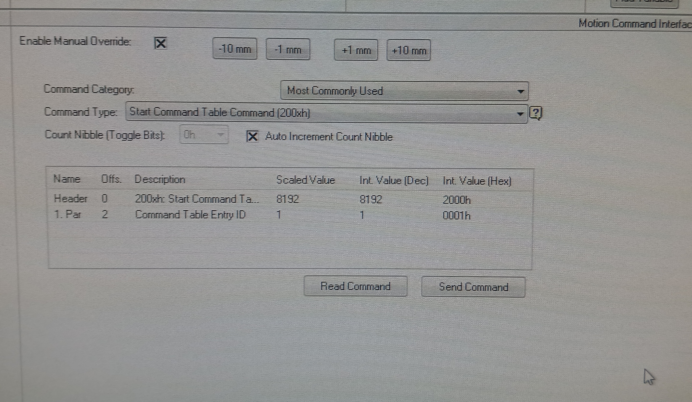
Para esto se elige como comando Start Command Table Command (200xh) y en Ccommand Table Entry ID se elige la Scaled Value = 1 para que empiece desde el principio. Hay que tildar el Enable Manual Override y Auto Increment Count Nibble.
- Presionar el botón de
Send Commandy se va a empezar a ejecutar. En mi caso probé con dos senos de 100 mm de amplitud, uno rápido de 2 s de período y otro lento de 10 s de período para verificar el correcto funcionamiento.
Para más información está: Command Table Tutorial.
[11:04]
Para exportar la Command Table desde File: Export: Filename.lmc: Seleccionar Command Table. El archivo de salida es un .lmc. La idea ahora sería analizar ese archivo para poder escribir un código de Python que programáticamente arme otro .lmc que alternaría entre 10 Curves IDs aleatoriamente. La Command Table tiene hasta 255 líneas, con lo cual, al cada curva necesitar una para cargarla y otra para esperar a que termine, podríamos tener una 122 curvas, que si cada una dura unos 10 s serían unos 20 minutos de medición.
[11:45]
Sobre el filtro de agua destilada:
- Cuando está en
Sípasa el agua del tanque azul al de arriba, y al terminar empieza a hacer el sonido declick click clickya que deja de tener agua para mover. - Hay que tener cuidado ya que el flotante del tanque de arriba está desconectado y puede rebalsarse.
- Al estar en
Nollena el tanque azul y se corta al llenarse. - Para que se llene el tanque de abajo hay que abrir la llave de abajo de la pileta. Abrirla poco por las dudas.
[11:47]
Sobre el archivo de configuración del Command Table: Pareciera ser una sucesión de bloques de corchetes [...] al estilo de JSON donde se guarda cada una de las 255 líneas de la tabla. En este caso hay solo 4 líneas llenas y 251 líneas vacías.
[14:12]
Una línea con comando es: [A #1 42753 'Curve1' 4 1 [A 1 0 0 0 0 0 0 0 0 0 0 0 0 0 0 0 ] 2 ]
Donde:
- La
Aestá siempre. - El
#1o#0hablan de si esa línea está siendo usada. - El
42753está siempre. "Curve1"es el nombre del comando.4es la orden o comando. Para nosotros las relevantes son:- 4: ejecutar curva.
- 33: esperar a terminar el movimiento.
- El
1está siempre. - El primer número del array da el
Curve IDa ejecutar, parawaites 0. - El
2da la siguiente entrada de lacommand tablea ejecutar.
[14:38]
Ya está funcionando el generador de curvas aleatorias. Se pueden elegir para poner hasta 127 curvas. Ahora quedaría generar las curvas en sí.
[15:03]
Ya están las curvas:
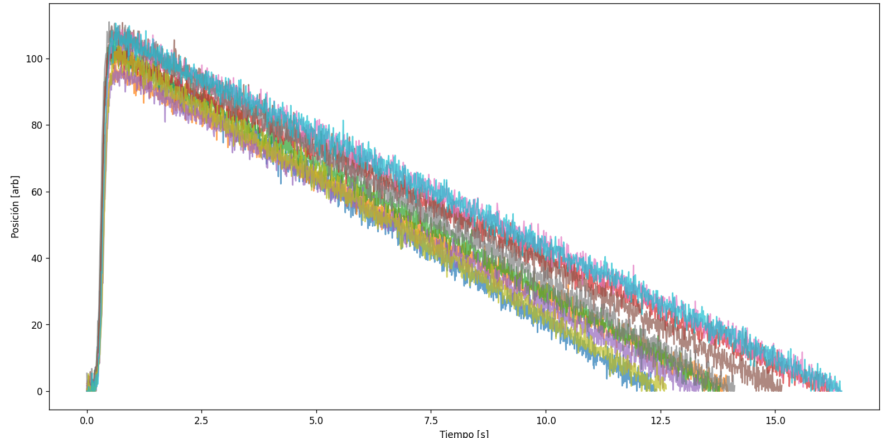
Están randomizados A=100 mm, \tau=750 ms y T=15 s, alrededor de esos valores que fueron los que mejor funcionaron la vez pasada, con un 2 \% de ruido Gaussiano agregado.
De momento, generé 10 curvas de 1600 puntos, suponiendo que al haber usado curvas de 16000 escala linealmente por la memoria de drive del motor.
[15:31]
Ya dejé colocada la rampa. Se torció un poco la estructura de perfiles que la presiona hacia abajo me parece respecto de la vez pasada.
2026-06-18
[11:23]
Ya estuvimos armando un código que se encarga de subir las curvas en bulk. Para esto usamos CLAUDE para generar un linmot_bulk_upload.py.
Para correrlo hace falta pyserial y pandas. Las series temporales deben ser .csv con una primera fila que sea "t,x" y luego las demás filas son los setpoints (su valor de tiempo en segundos y de posición en mm).
Para poder correr el script y cargar las curvas hay que seguir los pasos:
- Cerrar LinMot Talk si está abierto, para liberar la comunicación con el puerto
COM3. - Desenchufar la lógica y potencia del drive.
Cambiar el switch
S3.4del costado del drive aOn. En nuestro caso todos están enOffpor defecto.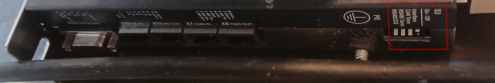
- Enchifar la potencia y la lógica.
Correr el Script desde cmd:
conda activate pdaqenv python linmot_bulk_upload.py COM3 ./Curvas_random/ --id 0x3f --baud 57600 --delete-all-curvesCon esto especificamos:
- El puerto al que está conetcado el drive:
COM3 - El directorio que contiene los .csv a subir.
El
MACIDdel drive. Para esto tenemos que configurar en LinMot Talk que se defina por parámetro: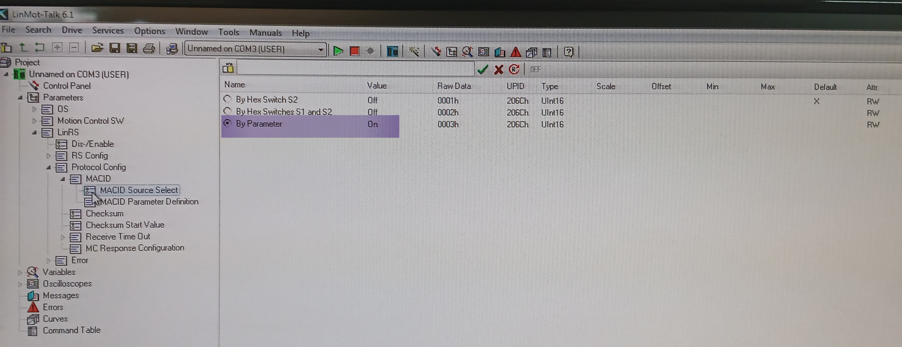
Y el parámetro que usa se puede revisar acá:
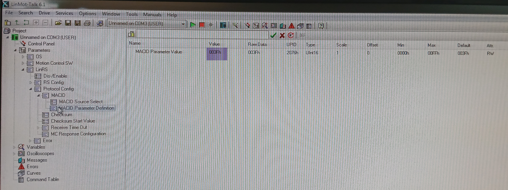
En este caso
003Fhsería en hex0x3f.El
Baud Ratede la comunicación. Esto se configura en: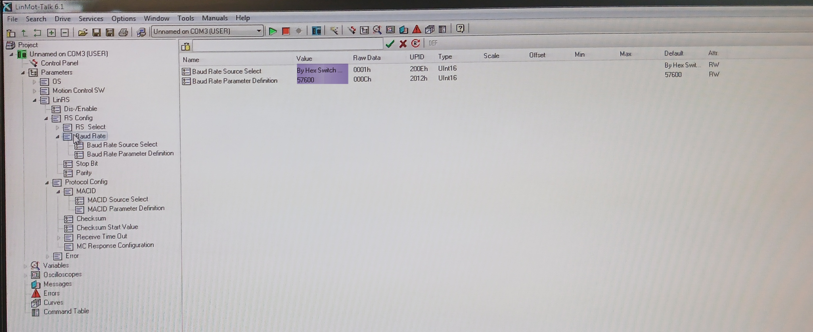
Que en este caso es de 57600.
- El flag que le dice que borre las curvas ya cargadas, sino appendea sobre las que ya están.
- El puerto al que está conetcado el drive:
- Desenchufar la lógica y la potencia una vez que termine.
- Volver a poner el switch de
S3.4enOffcomo el resto. - Enchufar la potencia y la lógica.
- Abrir LinMot Talk y utilizar las curvas. En nuestro caso cargoms la Command Table con el orden en que se utilizan.
Un punto importante es que dentro del código se convierten los valores dela curva a pasos del motor (de 0.1$μ$m), en formato de enteros de 32 bits que después se mandan en paquetes de 4 al drive. Para que pueda interpretar eso como milímetros después al controlar el motor desde LinMot Talk hay que mandar las unidades mediante:
struct.pack_into('<H', info, 38, 0x0005) # YDimUUID
[11:25]
Además, una vez funcionando notamos que el motor se quejaba del ruido Gaussiano, era de frecuencia de masiado alta, así que ahora uso ruido limitado en frecuencia más suave:
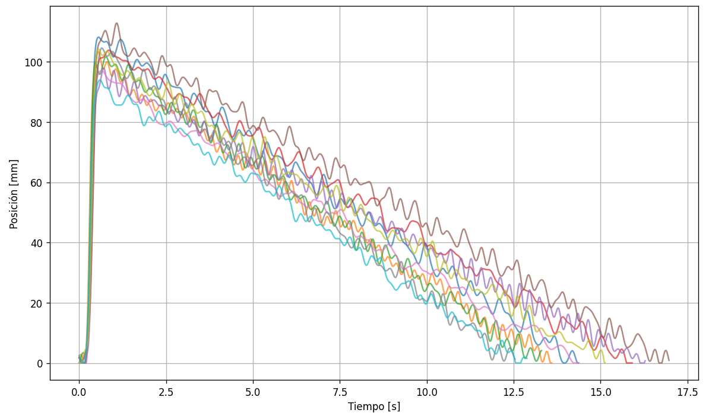
[15:06]
Estamos intentando usar la Computadora con Windows 11 con un adaptador CH-340 de USB a RS232.
[15:47]
Por otro lado conseguimos planchas de plexiglas de 3 mm x 1 m x 60 cm con las que vamos a armar placas de 15 cm de alto para tener de pared del canal.
2026-06-19
[10:33]
Ya estamos midiendo con el nuevo esquema de diez curvas levemente distintas con ruido de frecuencia baja sumado, alternadas aleatoriamente. Un par de cosas sobre el setup:
- Estoy usando solo agua de la canilla esta vez, con una altura que es casi la misma de la vez pasada, de 4.1 cm.
- El sensor del canal 1 (que usamos para probar con la leche) lo tuve que volver a tensar antes de colocarlo ya que el alambre de cbre estaba muy flojo. Además cambié su orientación, en el sentido de que ahora está un poco más lejos del sensor 2 al estar colocado del otro lado del perfil chiquito.
- El orden de los sensores es el mismo de la vez pasada.
- Probé con la paleta de 10 cm de ancho en lugar de la de 20 cm de la vez pasada y pareciera que dejan de romper. Probablemente haya que ajustar el tipo de forzado, la distancia a la rampa y demás para optimizarla, pero de momento sigo midiendo con la de 20 cm que ufnciona igual de la vez pasada.
- La distancia del motor al borde de la cuba es la misma, y la paleta está sumergida dejando un espacio de 1 cm antes del fondo.
- El homing cambió a 140 mm ya que algunas de las curvas hacían que el borde del vástago tocara el servo.
- Con el ruido de fondo pareciera que la onda rompe un poco más adelante. Acerqué aproximadamente un centímetro la rampa hacia el motor respecto de las mediciones de la vez pasada, pero las ondas más grandes llegan a romper justo antes o sobre el sensor.
- Verifiqué con el graficador en tiempo real el correcto funcionamiento simultáneo de los tres sensores antes de empezar a medir.
- La frecuencia de resonancia para que el sensor 1 esté centrado en \(\phi=0\) rad es de \(f=59.940\) kHz.
[10:46]
Del sensor 1 al 2 hay ~51 cm y del 2 al 3 hay ~31 cm. Algunas imágenes del setup:
Cuba:
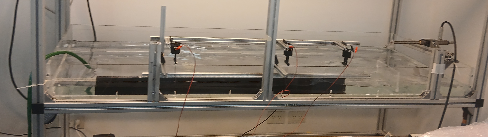
Software:
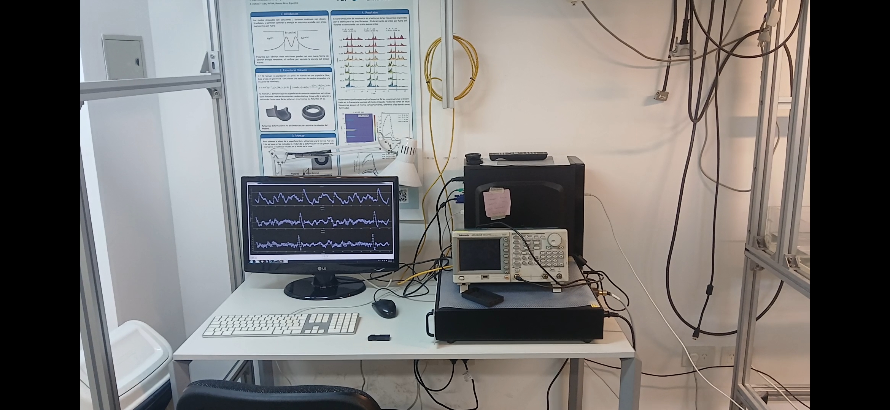
Electrónica:
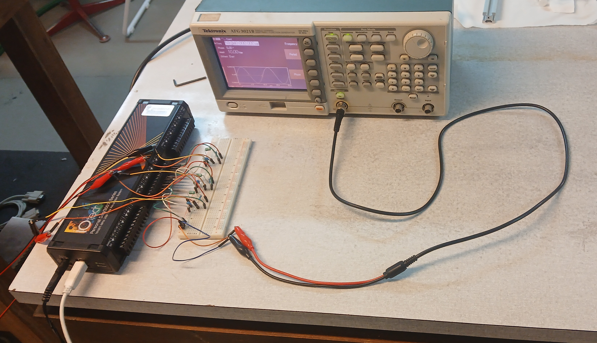
[10:58]
El motor después de 15 minutos prendido sigue sin calentarse así que lo voy a dejar la media hora que dura la totalidad del forzado independiente. Tomo primero para el sensor 1 solo y después para los tres.
[11:27]
Se detuvo el motor a la mitad de la medición con los tres sensores, se fue corriendo, tal vez por el calentamiento, hasta que empezó a tocar la parte de adelante al servo.
[12:17]
A continuación el espectro resultante para as mediciones de un único sensor, ajustado con una csch².
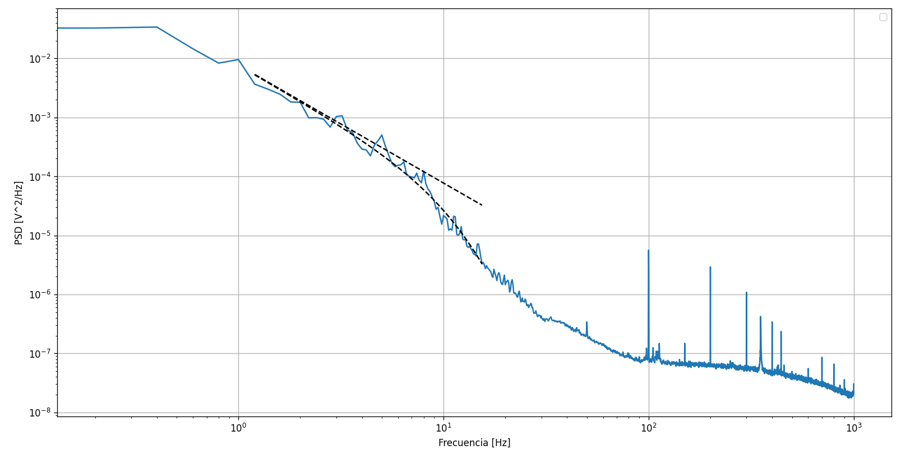
Pareciera ser bastante similar al de antes. Lo que creemos que está pasando es que los modos transversales están agregando modos discretos en frecuencias bajas y WWT en frecuencias altas que tapan el espectro longitudinal de surf zone para ondas de choque. Para separar ambas contribuciones hay que medir con FTP, la idea es hacer con el plexiglas un canal en el centro de la cuba, con separadores arriba para evitar que pandee y además ya que estamos posiciones para sostener los sensores/alambres de cobre. Revisar (Hassaini and Mordant 2018).
Además, después del csch² pareciera caer como -4 y luego de una frecuencia de corte en aproximadamente 30 Hz con un salta pasa a caer con -2. Esto se corresponde con los resulltados de Falcon para WWT con mercurio en shallow water (Falcon and Laroche 2011).
[12:21]
Lo que sí mejoró bastante son las PDFs de los incrementos para ventanas temporales largas al usar mediciones de media hora.
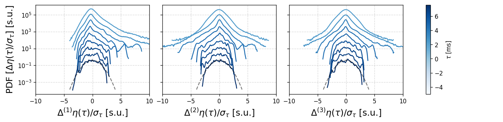